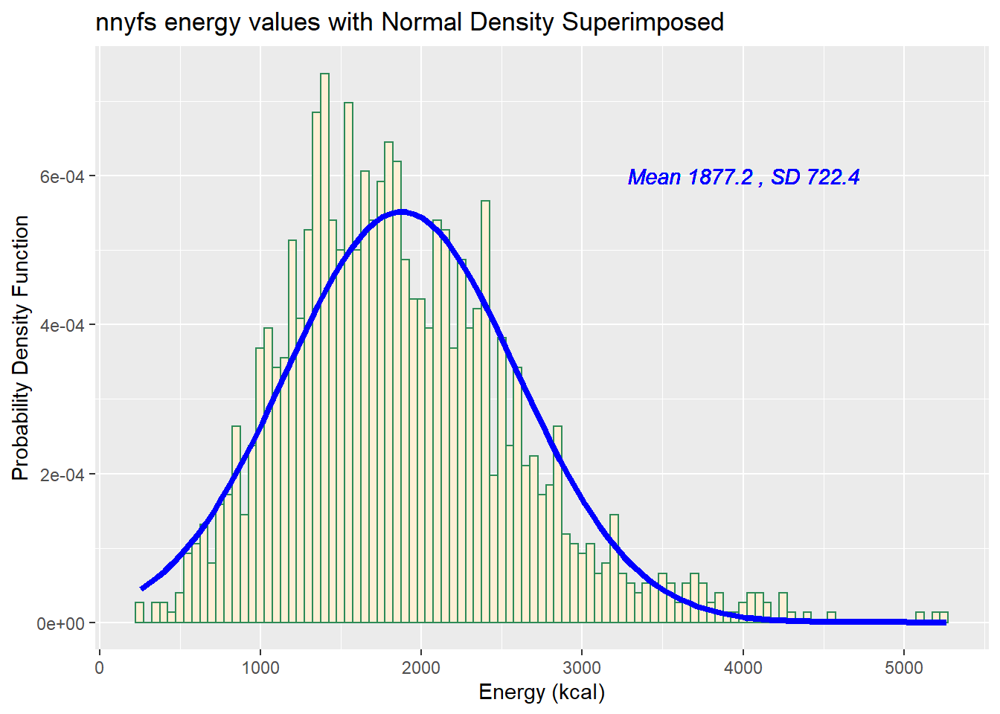
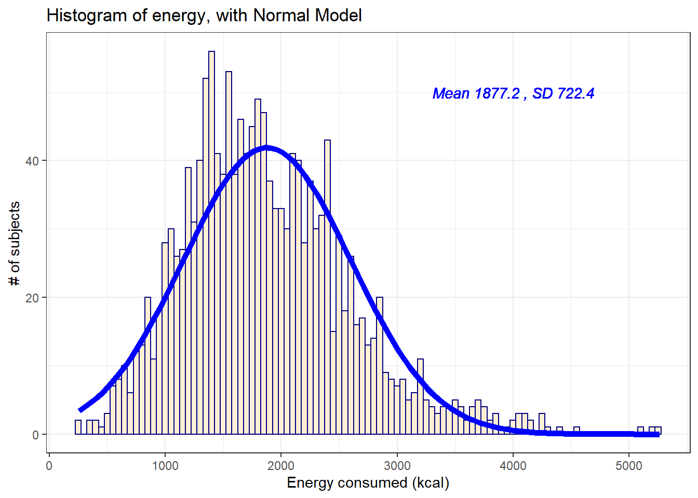
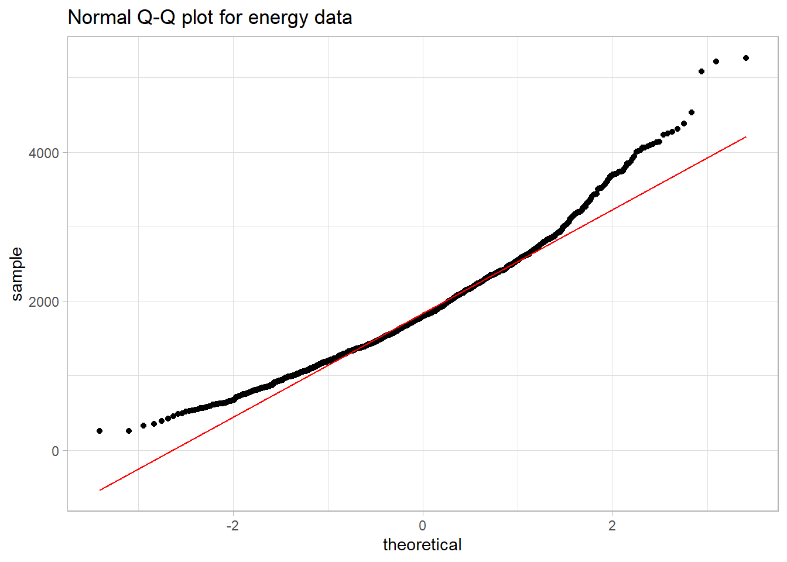
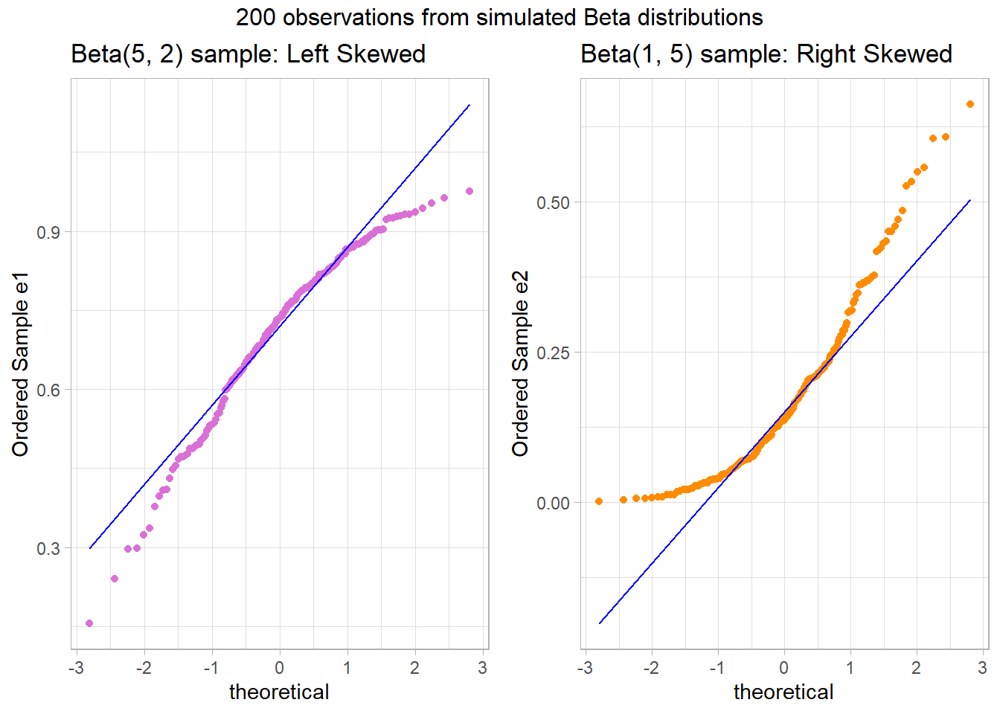
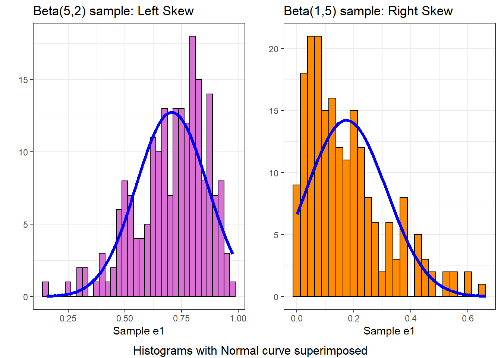
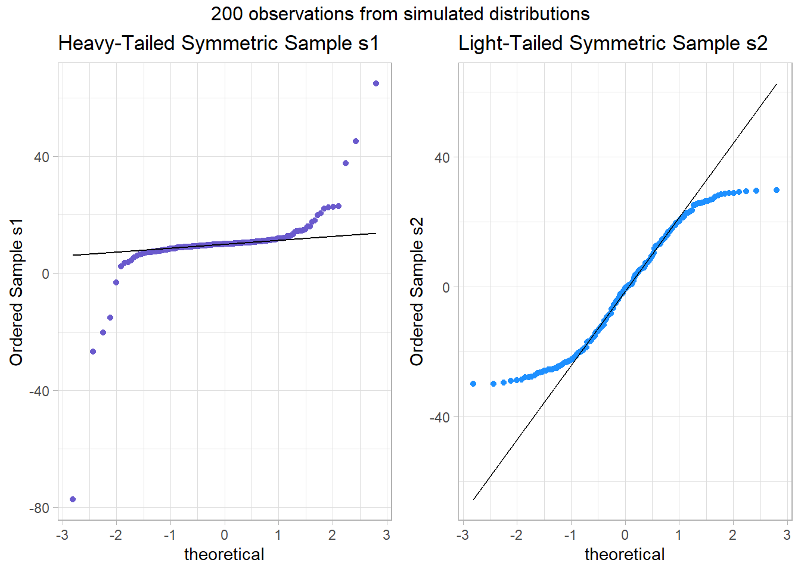
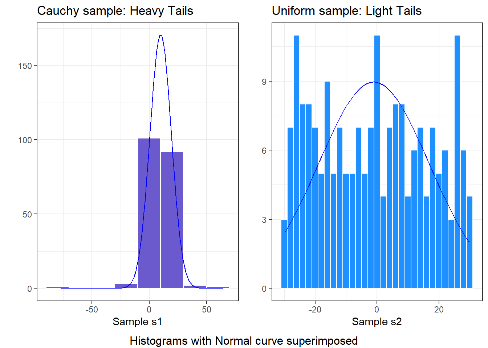
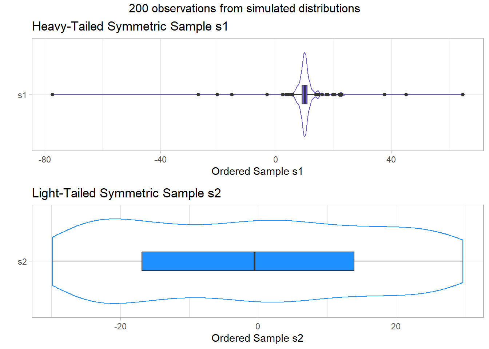
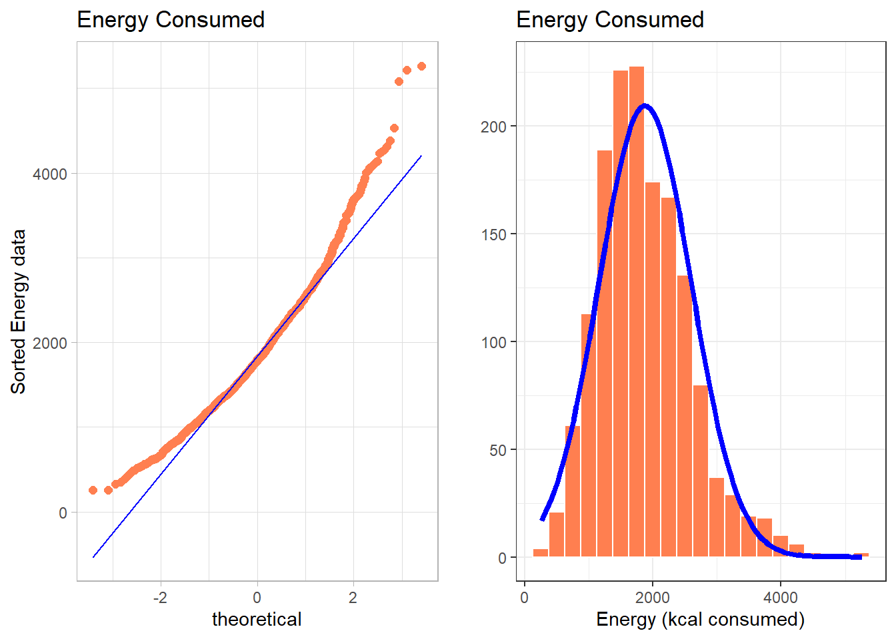
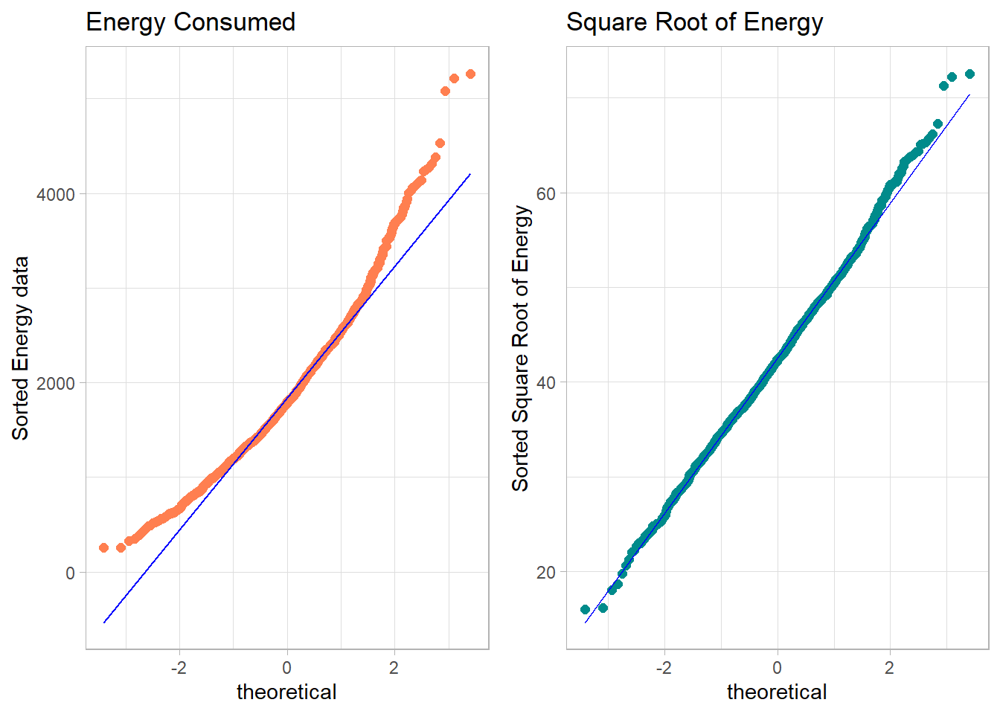

Chapter 8 Assessing Normality
Data are well approximated by a Normal distribution if the shape of the data’s distribution is a good match for a Normal distribution with mean and standard deviation equal to the sample statistics.
- the data are symmetrically distributed about a single peak, located at the sample mean
- the spread of the distribution is well characterized by a Normal distribution with standard deviation equal to the sample standard deviation
- the data show outlying values (both in number of candidate outliers, and size of the distance between the outliers and the center of the distribution) that are similar to what would be predicted by a Normal model.
We have several tools for assessing Normality of a single batch of data, including:
- a histogram with superimposed Normal distribution
- histogram variants (like the boxplot) which provide information on the center, spread and shape of a distribution
- the Empirical Rule for interpretation of a standard deviation
- a specialized normal Q-Q plot (also called a normal probability plot or normal quantile-quantile plot) designed to reveal differences between a sample distribution and what we might expect from a normal distribution of a similar number of values with the same mean and standard deviation
8.1 Empirical Rule Interpretation of the Standard Deviation
For a set of measurements that follows a Normal distribution, the interval:
- Mean \(\pm\) Standard Deviation contains approximately 68% of the measurements;
- Mean \(\pm\) 2(Standard Deviation) contains approximately 95% of the measurements;
- Mean \(\pm\) 3(Standard Deviation) contains approximately all (99.7%) of the measurements.
Again, most data sets do not follow a Normal distribution. We will occasionally think about transforming or re-expressing our data to obtain results which are better approximated by a Normal distribution, in part so that a standard deviation can be more meaningful.
For the energy data we have been studying, here again are some summary statistics…
min Q1 median Q3 max mean sd n missing
257 1368 1794 2306 5265 1877 722 1518 0The mean is 1877 and the standard deviation is 722, so if the data really were Normally distributed, we’d expect to see:
- About 68% of the data in the range (1155, 2600). In fact, 1085 of the 1518 energy values are in this range, or 71.5%.
- About 95% of the data in the range (432, 3322). In fact, 1450 of the 1518 energy values are in this range, or 95.5%.
- About 99.7% of the data in the range (-290, 4044). In fact, 1502 of the 1518 energy values are in this range, or 98.9%.
So, based on this Empirical Rule approximation, do the energy data seem to be well approximated by a Normal distribution?
8.2 Describing Outlying Values with Z Scores
The maximum energy consumption value here is 5265. One way to gauge how extreme this is (or how much of an outlier it is) uses that observation’s Z score, the number of standard deviations away from the mean that the observation falls.
Here, the maximum value, 5265 is 4.69 standard deviations above the mean, and thus has a Z score of 4.7.
A negative Z score would indicate a point below the mean, while a positive Z score indicates, as we’ve seen, a point above the mean. The minimum body-mass index, 257 is 2.24 standard deviations below the mean, so it has a Z score of -2.2.
Recall that the Empirical Rule suggests that if a variable follows a Normal distribution, it would have approximately 95% of its observations falling inside a Z score of (-2, 2), and 99.74% falling inside a Z score range of (-3, 3).
8.2.1 Fences and Z Scores
Note the relationship between the fences (Tukey’s approach to identifying points which fall within the whiskers of a boxplot, as compared to candidate outliers) and the Z scores.
The upper inner fence in this case falls at 3713.75, which indicates a Z score of 2.5, while the lower inner fence falls at -40.25, which indicates a Z score of -2.7. It is neither unusual nor inevitable for the inner fences to fall at Z scores near -2.0 and +2.0.
8.3 Comparing a Histogram to a Normal Distribution
Most of the time, when we want to understand whether our data are well approximated by a Normal distribution, we will use a graph to aid in the decision.
One option is to build a histogram with a Normal density function (with the same mean and standard deviation as our data) superimposed. This is one way to help visualize deviations between our data and what might be expected from a Normal distribution.
res <- mosaic::favstats(~ energy, data = nnyfs)
bin_w <- 50 # specify binwidth
ggplot(nnyfs, aes(x=energy)) +
geom_histogram(aes(y = ..density..), binwidth = bin_w,
fill = "papayawhip", color = "seagreen") +
stat_function(fun = dnorm,
args = list(mean = res$mean, sd = res$sd),
lwd = 1.5, col = "blue") +
geom_text(aes(label = paste("Mean", round(res$mean,1),
", SD", round(res$sd,1))),
x = 35, y = 0.02,
color="blue", fontface = "italic") +
labs(title = "nnyfs energy values with Normal Density Superimposed",
x = "Energy (kcal)", y = "Probability Density Function")
Does it seem as though the Normal model (as shown in the blue density curve) is an effective approximation to the observed distribution shown in the bars of the histogram?
We’ll return shortly to the questions:
- Does a Normal distribution model fit our data well? and
- If the data aren’t Normal, but we want to use a Normal model anyway, what should we do?
8.3.1 Histogram of energy with Normal model (with Counts)
But first, we’ll demonstrate an approach to building a histogram of counts (rather than a probability density) and then superimposing a Normal model.
res <- mosaic::favstats(~ energy, data = nnyfs)
bin_w <- 50 # specify binwidth
ggplot(nnyfs, aes(x = energy)) +
geom_histogram(binwidth = bin_w,
fill = "papayawhip",
col = "navy") +
theme_bw() +
stat_function(
fun = function(x) dnorm(x, mean = res$mean,
sd = res$sd) * res$n * bin_w,
col = "blue", size = 2) +
geom_text(aes(label = paste("Mean", round(res$mean,1),
", SD", round(res$sd,1))),
x = 4000, y = 50,
color="blue", fontface = "italic") +
labs(title = "Histogram of energy, with Normal Model",
x = "Energy consumed (kcal)", y = "# of subjects")
8.4 Does a Normal model work well for the waist circumference?
Now, suppose we instead look at the waist data, remembering to filter the data to the complete cases before plotting. Do these data appear to follow a Normal distribution?
res <- mosaic::favstats(~ waist, data = nnyfs)
bin_w <- 5 # specify binwidth
nnyfs %>% filter(complete.cases(waist)) %>%
ggplot(., aes(x = waist)) +
geom_histogram(binwidth = bin_w,
fill = "antiquewhite",
col = "navy") +
theme_bw() +
stat_function(
fun = function(x) dnorm(x, mean = res$mean,
sd = res$sd) *
res$n * bin_w,
col = "darkred", size = 2) +
geom_text(aes(label = paste("Mean", round(res$mean,1),
", SD", round(res$sd,1))),
x = 100, y = 200,
color="darkred", fontface = "italic") +
labs(title = "Histogram of waist, with Normal Model",
x = "Waist Circumference (cm)", y = "# of subjects")
min Q1 median Q3 max mean sd n missing
42.5 55.6 64.8 76.6 145 67.7 15.2 1512 6The mean is NA and the standard deviation is NA so if the waist data really were Normally distributed, we’d expect to see:
- About 68% of the data in the range (NA, NA). In fact, 1518 of the 1518 Age values are in this range, or 100%.
- About 95% of the data in the range (NA, NA). In fact, 1518 of the 1518 Age values are in this range, or 100%.
- About 99.7% of the data in the range (NA, NA). In fact, 1518 of the 1518 Age values are in this range, or 100%.
How does the Normal approximation work for waist circumference, according to the Empirical Rule?
8.5 The Normal Q-Q Plot
A normal probability plot (or normal quantile-quantile plot) of the energy results from the nnyfs data, developed using ggplot2 is shown below. In this case, this is a picture of 1518 energy consumption assessments. The idea of a normal Q-Q plot is that it plots the observed sample values (on the vertical axis) and then, on the horizontal, the expected or theoretical quantiles that would be observed in a standard normal distribution (a Normal distribution with mean 0 and standard deviation 1) with the same number of observations.
A Normal Q-Q plot will follow a straight line when the data are (approximately) Normally distributed. When the data have a different shape, the plot will reflect that.
ggplot(nnyfs, aes(sample = energy)) +
geom_qq() + geom_qq_line(col = "red") +
theme_light() +
labs(title = "Normal Q-Q plot for energy data")
8.6 Interpreting the Normal Q-Q Plot
The purpose of a Normal Q-Q plot is to help point out distinctions from a Normal distribution. A Normal distribution is symmetric and has certain expectations regarding its tails. The Normal Q-Q plot can help us identify data as well approximated by a Normal distribution, or not, because of:
- skew (including distinguishing between right skew and left skew)
- behavior in the tails (which could be heavy-tailed [more outliers than expected] or light-tailed)
8.6.1 Data from a Normal distribution shows up as a straight line in a Normal Q-Q plot
We’ll demonstrate the looks that we can obtain from a Normal Q-Q plot in some simulations. First, here is an example of a Normal Q-Q plot, and its associated histogram, for a sample of 200 observations simulated from a Normal distribution.
set.seed(123431) # so the results can be replicated
# simulate 200 observations from a Normal(20, 5) distribution and place them
# in the d variable within the temp.1 data frame
temp.1 <- data.frame(d = rnorm(200, mean = 20, sd = 5))
# left plot - basic Normal Q-Q plot of simulated data
p1 <- ggplot(temp.1, aes(sample = d)) +
geom_qq() + geom_qq_line(col = "red") +
theme_light() +
labs(y = "Ordered Simulated Sample Data")
# right plot - histogram with superimposed normal distribution
res <- mosaic::favstats(~ d, data = temp.1)
bin_w <- 2 # specify binwidth
p2 <- ggplot(temp.1, aes(x = d)) +
geom_histogram(binwidth = bin_w,
fill = "papayawhip",
col = "seagreen") +
theme_bw() +
stat_function(
fun = function(x) dnorm(x, mean = res$mean,
sd = res$sd) *
res$n * bin_w,
col = "blue", size = 1.5) +
geom_text(aes(label = paste("Mean", round(res$mean,1),
", SD", round(res$sd,1))),
x = 100, y = 200,
color="darkred", fontface = "italic") +
labs(x = "Simulated Sample Data", y = "")
gridExtra::grid.arrange(p1, p2, ncol=2,
top ="200 observations from a simulated Normal distribution")
These simulated data appear to be well-modeled by the Normal distribution, because the points on the Normal Q-Q plot follow the diagonal reference line. In particular,
- there is no substantial curve (such as we’d see with data that were skewed)
- there is no particularly surprising behavior (curves away from the line) at either tail, so there’s no obvious problem with outliers
8.6.2 Skew is indicated by monotonic curves in the Normal Q-Q plot
Data that come from a skewed distribution appear to curve away from a straight line in the Q-Q plot.
set.seed(123431) # so the results can be replicated
# simulate 200 observations from a beta(5, 2) distribution into the e1 variable
# simulate 200 observations from a beta(1, 5) distribution into the e2 variable
temp.2 <- data.frame(e1 = rbeta(200, 5, 2), e2 = rbeta(200, 1, 5))
p1 <- ggplot(temp.2, aes(sample = e1)) +
geom_qq(col = "orchid") + geom_qq_line(col = "blue") +
theme_light() +
labs(y = "Ordered Sample e1",
title = "Beta(5, 2) sample: Left Skewed")
p2 <- ggplot(temp.2, aes(sample = e2)) +
geom_qq(col = "darkorange") + geom_qq_line(col = "blue") +
theme_light() +
labs(y = "Ordered Sample e2",
title = "Beta(1, 5) sample: Right Skewed")
gridExtra::grid.arrange(p1, p2, ncol=2, top ="200 observations from simulated Beta distributions")
Note the bends away from a straight line in each sample. The non-Normality may be easier to see in a histogram.
res1 <- mosaic::favstats(~ e1, data = temp.2)
bin_w1 <- 0.025 # specify binwidth
p1 <- ggplot(temp.2, aes(x = e1)) +
geom_histogram(binwidth = bin_w1,
fill = "orchid",
col = "black") +
theme_bw() +
stat_function(
fun = function(x) dnorm(x, mean = res1$mean,
sd = res1$sd) *
res1$n * bin_w1,
col = "blue", size = 1.5) +
labs(x = "Sample e1", y = "",
title = "Beta(5,2) sample: Left Skew")
res2 <- mosaic::favstats(~ e2, data = temp.2)
bin_w2 <- 0.025 # specify binwidth
p2 <- ggplot(temp.2, aes(x = e2)) +
geom_histogram(binwidth = bin_w2,
fill = "darkorange",
col = "black") +
theme_bw() +
stat_function(
fun = function(x) dnorm(x, mean = res2$mean,
sd = res2$sd) *
res2$n * bin_w2,
col = "blue", size = 1.5) +
labs(x = "Sample e1", y = "",
title = "Beta(1,5) sample: Right Skew")
gridExtra::grid.arrange(p1, p2, ncol=2,
bottom ="Histograms with Normal curve superimposed")
8.6.3 Direction of Skew
In each of these pairs of plots, we see the same basic result.
- The left plot (for data e1) shows left skew, with a longer tail on the left hand side and more clustered data at the right end of the distribution.
- The right plot (for data e2) shows right skew, with a longer tail on the right hand side, the mean larger than the median, and more clustered data at the left end of the distribution.
8.6.4 Outlier-proneness is indicated by “s-shaped” curves in a Normal Q-Q plot
- Heavy-tailed but symmetric distributions are indicated by reverse “S”-shapes, as shown on the left below.
- Light-tailed but symmetric distributions are indicated by “S” shapes in the plot, as shown on the right below.
set.seed(4311) # so the results can be replicated
# sample 200 observations from each of two probability distributions
temp.3 <- data.frame(s1 = rcauchy(200, location=10, scale = 1),
s2 = runif(200, -30, 30))
p1 <- ggplot(temp.3, aes(sample = s1)) +
geom_qq(col = "slateblue") + geom_qq_line(col = "black") +
theme_light() +
labs(y = "Ordered Sample s1",
title = "Heavy-Tailed Symmetric Sample s1")
p2 <- ggplot(temp.3, aes(sample = s2)) +
geom_qq(col = "dodgerblue") + geom_qq_line(col = "black") +
theme_light() +
labs(y = "Ordered Sample s2",
title = "Light-Tailed Symmetric Sample s2")
gridExtra::grid.arrange(p1, p2, ncol=2, top ="200 observations from simulated distributions")
And, we can also visualize these simulations with histograms, although they’re less helpful for understanding tail behavior than they are for skew.
res1 <- mosaic::favstats(~ s1, data = temp.3)
bin_w1 <- 20 # specify binwidth
p1 <- ggplot(temp.3, aes(x = s1)) +
geom_histogram(binwidth = bin_w1,
fill = "slateblue",
col = "white") +
theme_bw() +
stat_function(
fun = function(x) dnorm(x, mean = res1$mean,
sd = res1$sd) *
res1$n * bin_w1,
col = "blue") +
labs(x = "Sample s1", y = "",
title = "Cauchy sample: Heavy Tails")
res2 <- mosaic::favstats(~ s2, data = temp.3)
bin_w2 <- 2 # specify binwidth
p2 <- ggplot(temp.3, aes(x = s2)) +
geom_histogram(binwidth = bin_w2,
fill = "dodgerblue",
col = "white") +
theme_bw() +
stat_function(
fun = function(x) dnorm(x, mean = res2$mean,
sd = res2$sd) *
res2$n * bin_w2,
col = "blue") +
labs(x = "Sample s2", y = "",
title = "Uniform sample: Light Tails")
gridExtra::grid.arrange(p1, p2, ncol=2,
bottom ="Histograms with Normal curve superimposed")
Instead, boxplots (here augmented with violin plots) can be more helpful when thinking about light-tailed vs. heavy-tailed distributions.
p1 <- ggplot(temp.3, aes(x = "s1", y = s1)) +
geom_violin(col = "slateblue") +
geom_boxplot(fill = "slateblue", width = 0.2) +
theme_light() +
coord_flip() +
labs(y = "Ordered Sample s1", x = "",
title = "Heavy-Tailed Symmetric Sample s1")
p2 <- ggplot(temp.3, aes(x = "s2", y = s2)) +
geom_violin(col = "dodgerblue") +
geom_boxplot(fill = "dodgerblue", width = 0.2) +
theme_light() +
coord_flip() +
labs(y = "Ordered Sample s2", x = "",
title = "Light-Tailed Symmetric Sample s2")
gridExtra::grid.arrange(p1, p2, nrow=2, top ="200 observations from simulated distributions")
8.7 Can a Normal Distribution Fit the nnyfs energy data Well?
The energy data we’ve been studying shows meaningful signs of right skew.
p1 <- ggplot(nnyfs, aes(sample = energy)) +
geom_qq(col = "coral", size = 2) +
geom_qq_line(col = "blue") +
theme_light() +
labs(title = "Energy Consumed",
y = "Sorted Energy data")
res <- mosaic::favstats(~ energy, data = nnyfs)
bin_w <- 250 # specify binwidth
p2 <- ggplot(nnyfs, aes(x = energy)) +
geom_histogram(binwidth = bin_w,
fill = "coral",
col = "white") +
theme_bw() +
stat_function(
fun = function(x) dnorm(x, mean = res$mean,
sd = res$sd) *
res$n * bin_w,
col = "blue", size = 1.5) +
labs(x = "Energy (kcal consumed)", y = "",
title = "Energy Consumed")
gridExtra::grid.arrange(p1, p2, ncol = 2)
- Skewness is indicated by the curve in the Normal Q-Q plot. Curving up and away from the line in both tails suggests right skew, as does the histogram.
What if we plotted not the original energy values (all of which are positive) but instead plotted the square roots of the energy values?
- Compare these two plots - the left describes the distribution of the original energy data from the NNYFS data frame, and the right plot shows the distribution of the square root of those values.
p1 <- ggplot(nnyfs, aes(sample = energy)) +
geom_qq(col = "coral", size = 2) +
geom_qq_line(col = "blue") +
theme_light() +
labs(title = "Energy Consumed",
y = "Sorted Energy data")
p2 <- ggplot(nnyfs, aes(sample = sqrt(energy))) +
geom_qq(col = "darkcyan", size = 2) +
geom_qq_line(col = "blue") +
theme_light() +
labs(title = "Square Root of Energy",
y = "Sorted Square Root of Energy")
gridExtra::grid.arrange(p1, p2, ncol = 2)
- The left plot shows substantial right or positive skew
- The right plot shows there’s much less skew after the square root has been taken.
Our conclusion is that a Normal model is a far better fit to the square root of the energy values than it is to the raw energy values.
The effect of taking the square root may be clearer from the histograms below, with Normal models superimposed.
res <- mosaic::favstats(~ energy, data = nnyfs)
bin_w <- 250 # specify binwidth
p1 <- ggplot(nnyfs, aes(x = energy)) +
geom_histogram(binwidth = bin_w,
fill = "coral",
col = "white") +
theme_bw() +
stat_function(
fun = function(x) dnorm(x, mean = res$mean,
sd = res$sd) *
res$n * bin_w,
col = "black", size = 1.5) +
labs(x = "Energy (kcal consumed)", y = "",
title = "Energy Consumed")
res2 <- mosaic::favstats(~ sqrt(energy), data = nnyfs)
bin_w2 <- 5 # specify binwidth
p2 <- ggplot(nnyfs, aes(x = sqrt(energy))) +
geom_histogram(binwidth = bin_w2,
fill = "darkcyan",
col = "white") +
theme_bw() +
stat_function(
fun = function(x) dnorm(x, mean = res2$mean,
sd = res2$sd) *
res2$n * bin_w2,
col = "black", size = 1.5) +
labs(x = "Square Root of Energy", y = "",
title = "Square Root of Energy")
gridExtra::grid.arrange(p1, p2, ncol=2,
top =
textGrob("Comparing energy to sqrt(energy)",
gp=gpar(fontsize=15)))
When we are confronted with a variable that is not Normally distributed but that we wish was Normally distributed, it is sometimes useful to consider whether working with a transformation of the data will yield a more helpful result, as the square root does in this instance.
The next Chapter provides some initial guidance about choosing between a class of power transformations that can reduce the impact of non-Normality in unimodal data.